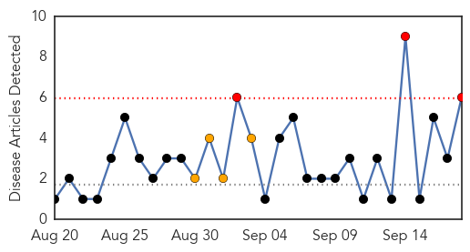
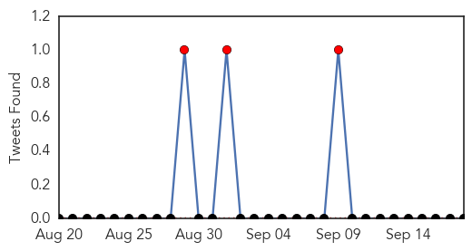
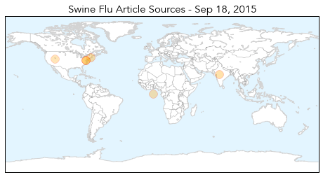

Mold/Fungal
30-Day Web Trend
0 alerts, 0 warnings

30-Day Twitter Trend
0 alerts, 0 warnings

Article Locations

Article Confidences

Top Articles:
Top Tweets:
-
No tweets found for Sep 18, 2015
Swine Flu
30-Day Web Trend
3 alerts, 4 warnings

30-Day Twitter Trend
3 alerts, 0 warnings

Article Locations
Article Confidences
Top Articles:
- 0.999
- After dengue, health experts warn Delhiites of swine flu
- 0.996
- Things to know about the flu shot: Lots of options this year
- 0.996
- Things to know about the flu shot: Lots of options this year
- 0.995
- What you should know about this year's flu vaccine
- 0.907
- CDC reports more health care workers getting flu shots
- 0.839
- News Scan for Sep 18, 2015
Top Tweets:
- 0.513
- RT: NEWS SCAN: Ebola drug expedited; Polio vax regimen tested; US biolab breach; H1N1 genetic risk; Denmark MRSA http://t.co/8X…